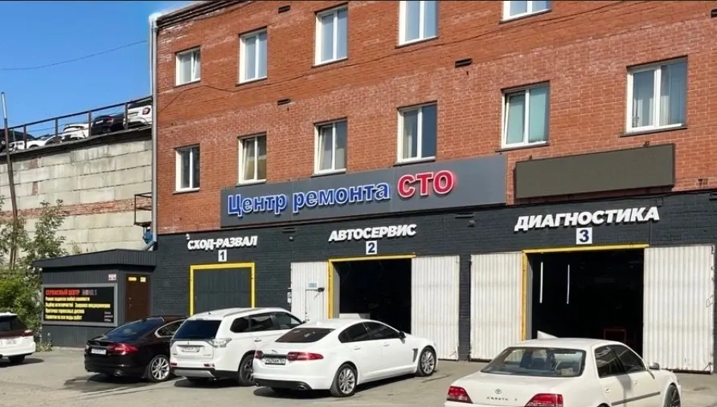
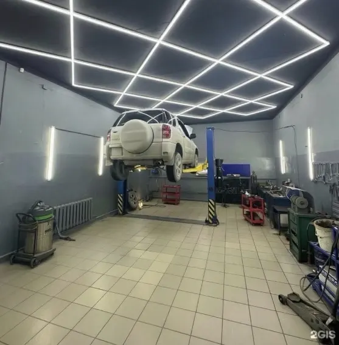
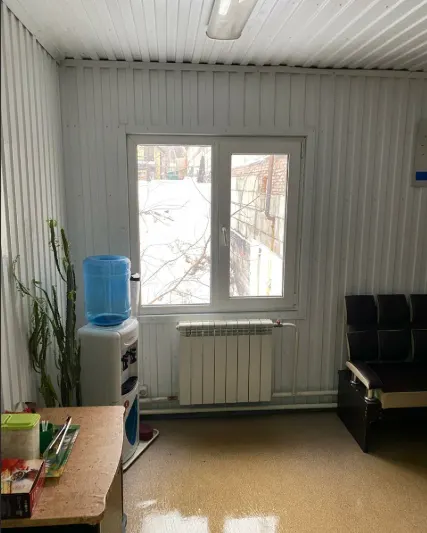
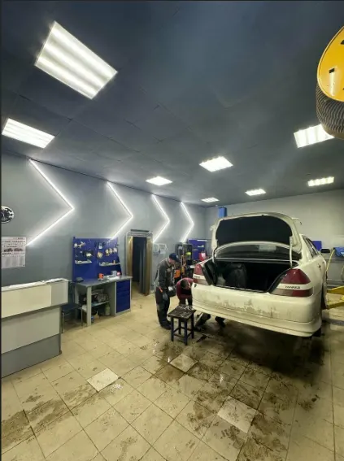

СТО Центр ремонта
Легковой автосервис, ремонт ходовой части автомобиля, развал-схождение
- Рейтинг 5 в 2ГИС по 260 оценкам, 209 отзывов
- Кропоткина, 201, Пн–Пт 09:00–19:00, Сб–Вс 09:00–18:00
- Оплата картой, наличными, переводом и по QR-коду

Что рядом с ремонтом
Входит
- Диагностика, ходовая, рулевые рейки и сварка в одном месте
- Восстановление стоек и амортизаторов
- Развал-схождение, шиномонтаж и замена колодок
- Wi-Fi для клиентов и 4 парковки рядом
- Запись по телефону, в WhatsApp, Telegram или Max
Отдельно, если нужно
- Итоговая цена ремонта зависит от автомобиля и объёма работ
- Стоимость ремонта называют после диагностики
Цены на работы
Цены с карточки в 2ГИС, обновлены 8 сентября 2026. Точную стоимость называют после диагностики.
Диагностика
- Компьютерная диагностика электронных системот 1 000 ₽
- Диагностика ходовой частиот 1 200 ₽
- Диагностика состава выхлопных газов газоанализаторомот 1 200 ₽
- Поиск и устранение неисправностей электропроводкиот 800 ₽
Ремонт и обслуживание
- Восстановление и ремонт амортизаторов и стоекот 800 ₽
- Развал-схождениеот 1 800 ₽
- Проточка тормозных дисковот 1 000 ₽
- Замена масла в ДВСот 1 000 ₽
- Замена тормозной жидкостиот 1 800 ₽
- Замена топливного фильтраот 1 350 ₽
- Промывка топливной системыот 1 500 ₽
- Промывка радиаторов двигателя и кондиционераот 2 500 ₽
- Промывка радиатора отопителя без снятияот 4 000 ₽
- Сварочные работыот 1 200 ₽
Цены «от» взяты с карточки в 2ГИС. Цены на рулевые рейки, шиномонтаж и замену колодок – уточнить.
Четыре шага от записи до выдачи
- 01
Записались
Позвонили или написали в мессенджер, назвали марку и что нужно.
- 02
Диагностика
Мастер смотрит автомобиль и называет стоимость.
- 03
Ремонт
Делаем работу, пока вы ждёте в зоне отдыха или занимаетесь делами.
- 04
Выдача
Забираете машину, рассказываете, что понравилось.



Что говорят клиенты
Быстро
«Заехал через час после звонка» – из отзыва в 2ГИС.
Без лишних услуг
«Работы выполнили очень быстро без навязывания лишних услуг» – из отзыва в 2ГИС.
Стойки и рейки
«Восстановили потекшие стойки. Езжу месяц полет отличный» – из отзыва в 2ГИС.
Гарантия
«Получил гарантию на работы» – из отзыва в 2ГИС.
Отзывы с 2ГИС
«Заехал через час после звонка. Установка проставок в круг. Мастер Сергей всё сделал на отлично,быстро и качественно. Отличное Сто ,рекомендую.»
Никола Русский · 2ГИС
«Отличный сервис.Менял рулевую рейку. Ступичный подшипник. Ребята мастера своего дела. Всё сделано грамотно, быстро.»
Дмитрий Мартыненко · 2ГИС
«Работы выполнили очень быстро без навязывания лишних услуг, разрешают наблюдения за работой. Особенно понравилась работа персонала, очень приветливые и приятные ребята»
Владимир Зобнин · 2ГИС
Отзывы с карточки в 2ГИС, дословно.
Частые вопросы
Как записаться?
Позвоните по телефону +7 913 917-70-58 либо напишите в WhatsApp, Telegram или Max.
Где вы находитесь?
Новосибирск, улица Кропоткина, 201, 1 этаж. Рядом 4 парковки.
Какие услуги у вас есть?
Диагностика, ремонт ходовой части, восстановление стоек, рулевые рейки, развал-схождение, замена масла, шиномонтаж, сварочные работы.
Когда вы работаете?
С понедельника по пятницу с 09:00 до 19:00, в субботу и воскресенье с 09:00 до 18:00.
Запишитесь на удобное время
- Адрес
- Улица Кропоткина, 201, Новосибирск
- Часы
- Пн–Пт 09:00–19:00, Сб–Вс 09:00–18:00
- Телефон
- +7 913 917-70-58